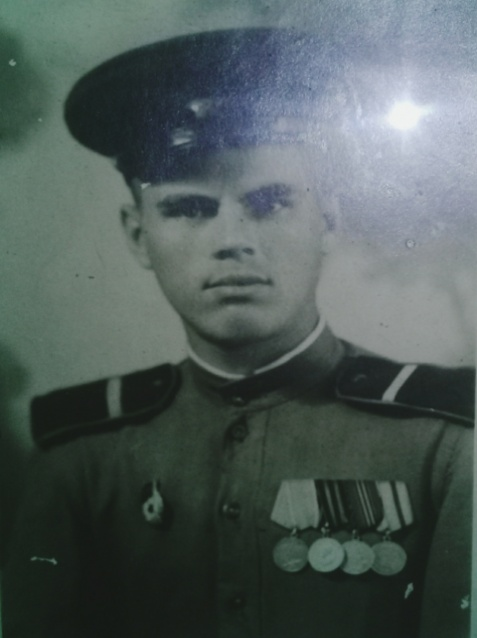
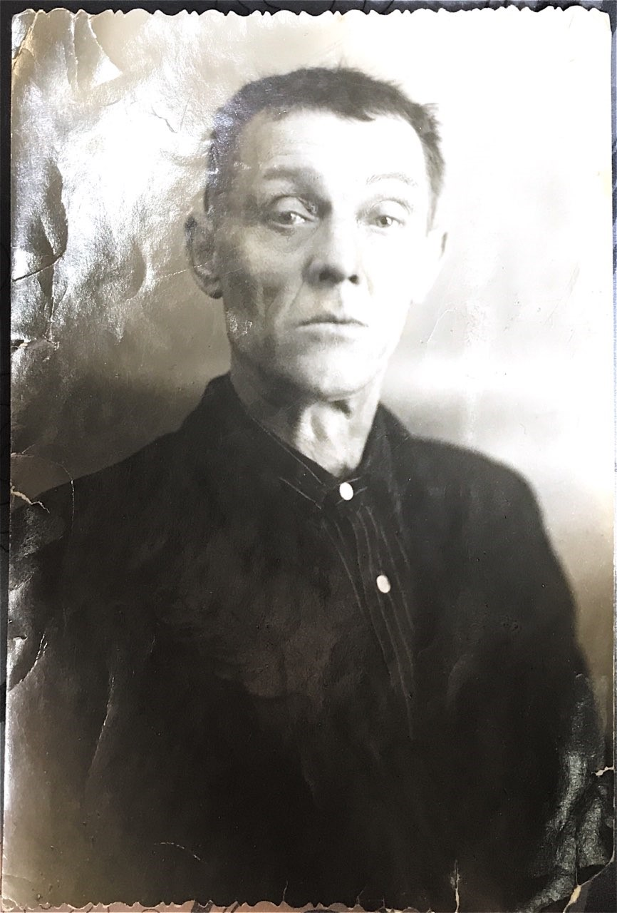
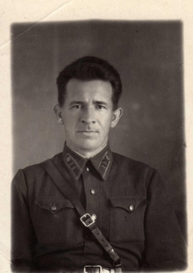

АГАФОНКИН ПЕТР ИВАНОВИЧ
(22.01.1924 г. – 08.01.2001 г.)
Мой прадедушка, Петр Иванович Агафонкин - родился в 1924 г. в с. Вадинске Пензенской области. В 1932 г. семья Агафонкиных переезжает в город Беднодемьяновск. До ухода на фронт Петр работал трактористом в совхозе.
В августе 1942 г. Беднодемьяновским РВК Петра призывают в ряды Красной Армии. Ему тогда было 18 лет. Свою фронтовую дорогу он начал в школе младших командиров в городе Вольск Саратовской области. По окончании учебы младшего сержанта направляют в Пугачев, но пробыл здесь он недолго. В 1943 г. в Саратове был сформирован эшелон и направлен в г. Елец, на Орловско-Курскую дугу. Из-за сильной бомбежки эшелон до места не дошел. Оставшихся в живых направили в 56-й отдельный особый батальон 27-й армии. В части Петра определили первым номеров пулеметного расчета, и на следующий день он принял боевое крещение в бою. После Курской битвы их батальон прошел по многим дорогам Украины, форсировал Днепр, преодолевал Карпаты.
Однажды была дана команда – сделать разведку боем. Было их пять человек, старший мой прадедушка. Залегли в какой-то лощине, а немецкие окопы были совсем близко. Послали одного солдата из отделения моего прадедушки на разведку. Но он не вернулся, попал к немцам в плен. И лишь повторная разведка дала ясность, как следовать дальше.
В июне 1944 г. в звании младшего лейтенанта прадедушку направляют командиром пулеметного взвода в 3-ю воздушно-десантную гвардейскую дивизию. В составе этой дивизии он прошел свой боевой путь до Венгрии.
В один из сентябрьских дней батальону поставили задачу овладеть господствующей высотой. Дорогу преграждали очень сильные укрепления. Перед штурмом наши войска провели артиллерийскую подготовку. Затем в небо взлетела ракета-сигнал о начале наступления. Поднявшиеся в атаку бойцы не успели пробежать и несколько десятков метров, как огонь обороняющегося врага заставил их залечь. И тогда, с криком «Ура! За Родину!» взводный личным примером поднял бойцов в атаку. Стремительным броском высота была взята, немцы отступили. Командованием части, мой прадедушка, П.И. Агафонкин был представлен к награде - «Ордену Красная Звезда», но получить его он не успел. Через три дня под городом Клужем он был тяжело ранен. 16 осколков от мины пронзили ему грудь, лишь чудом остался жив. До конца его жизни осколки металла находились в его теле.
В декабре 1945 г. мой прадедушка демобилизовался из армии и вернулся в Беднодемьяновск. За активное участие в боевых действиях награжден двумя «Орденами Красной Звезды», «Орденом Отечественной войны I степени» и многими медалями.
После демобилизации он работал некоторое время инструктором райкома - ДОСААФ. Позже окончил курсы шоферов и проработал в Беднодемьяновском АТП многие годы. Здесь он трудился до ухода на пенсию.
В ноябре 1948 г. женился. Вместе с супругой Евдокией Васильевной, моей прабабушкой, воспитали пятерых детей, 10 внуков и 13 правнуков.
АКИМОВ АЛЕКСЕЙ АФАНАСЬЕВИЧ
(1920 – 1981)
Что каждый из нас знает об истории своей семьи, о семейных традициях? Мы знаем своих родителей, знаем бабушек и дедушек. А вот уже старшие поколения, в лучшем случае, известны нам по старым семейным альбомам с фотографиями или письмами. И, к сожалению, если мы сами не позаботимся о сохранении истории семьи, о создании семейного архива, то, скорее всего, семейные традиции будут забыты, а наши правнуки едва ли смогут назвать наши имена и фамилии.
Наша страна готовится к 75-летию Великой Победы. Этот день занимает особое место среди отмечаемых праздников в нашей стране. К сожалению, очевидцев этой страшной войны с каждым годом становится меньше.
Мой прадедушка Акимов Алексей Афанасьевич отстаивал свободу и светлое небо над нашей страной в этой страшной и жестокой войне, и его военный путь оказался очень тяжёлым.
Акимов Алексей Афанасьевич родился в 1920 г. в с. Безводное Терновского района Пензенской области. Родители его происходили из крестьянского рода. С ранних лет он был приучен к труду, об учебе в то время не было и речи. Отец прадеда был отличным кузнецом, этому искусству он научил и Алексея Афанасьевича.
27 сентября 1940г. Алексей Афанасьевич был призван в ряды Советской Армии. Проходил службу на Дальнем Востоке. Перед началом войны их часть перебросили на западную границу в Брестскую крепость. Там мой прадед стал курсантом ковкузнецов при ветлазарете 17 КПО.
У нас в семье сохранилось письмо моего прадеда. Вот как он вспоминает о начале войны: «Мы, пограничники-курсанты школы, жили в кирпичном двухэтажном доме, который находился в 50 метрах от линии государственной границы, около дороги через Буг на Тирасполь. На западном острове начали стрелять, один из первых фашистских снарядов начала войны попал в наш дом и разорвался на втором этаже. Я первый поднялся, крикнул: «Война!» Вскочили, схватили одежду, винтовки и бегом стали спускаться по лестнице вниз. Я был сбит с ног воздушной волной от второго снаряда, попавшего в стену, чуть выше головы. Контужен, ранен осколками. Не помню, сколько пролежал. Когда очнулся - кругом дым, смрад, в голове звон, ничего не слышу. Мысль работала, лестница внизу горела. Всё-таки я поднялся на второй этаж, не чувствуя ранения в левое бедро, множества мелких ранений, ожогов и выпрыгнул со второго этажа в сторону крепости.
В крепость невозможно было пробиться, потому что пули беспрерывно летели из-за Буга от немцев, появившихся на крепостном валу.
Я стал отползать от здания и увидел, что несколько товарищей (Чекмарёв, Сгонник, Кузьмин, Черных) ведут бой с немцами. Я присоединился к ним. Затем в бой вступили бойцы транспортной роты, а мы направились к пороховым складам, или как мы называли, бомбоубежищу, и стали собираться в укрытие. В течение нескольких дней мы оборонялись, делая вылазки по ночам. Во время одной из вылазок, в поисках боеприпасов, съестного и воды, я был снова контужен, а когда пришёл в сознание, понял, что окружён немцами, попал в плен».
Плен, концлагерь стали для Алексея Акимова первым кругом ада. Под дулами автоматов полураздетых, падавших от истощения, гоняли фашисты на работу наших людей.
Когда на седьмой день войны, до крайности истощённый, вторично контуженый, Акимов попал в плен и не мог подняться, его не пристрелили. Ему придумали другую казнь. Немецкий офицер распорядился отправить его к трупам.
На западном берегу Буга большое поле было покрыто аккуратно уложенными трупами немецких солдат, прикрытых сверху ветками. Их была не одна сотня, и туда продолжали свозить по Бугу на лодках трупы немцев со всей линии Брестского пограничного отряда. Стояла жаркая погода. Кругом разлагающиеся раздутые потемневшие трупы, издающие невыносимый смердящий запах. В ранах ворочаются черви. В такой ужасной обстановке Акимов провёл день и ночь. И этот страшный вид поражённого врага не убил Акимова, а влил в него гордость за наших стойких пограничников, не пропустивших на нашу Родину стольких врагов, и придал ему силы в борьбе.
Выбравшись из этого ада, прадед опять попал в лапы врагов. Фашисты разместили пленных на открытом пространстве площадью в несколько гектаров. Ограждение было из колючей проволоки, а вокруг сторожевые вышки. За малейшее неповиновение - пуля в лоб. Издевательства, побои, холод, голод. Но днём и ночью сверлила одна мысль: надо бежать из плена, вырваться из этого ада. И такой случай представился.
Под напором советских войск, отступая, немцы перегоняли пленных на запад. Временно разместили в большом доме. Человек тридцать, а вместе с ними и Алексей Акимов, решили спрятаться на чердаке. Риск был громадный. Слышали затаившиеся на чердаке люди, как фашисты автоматными очередями уложили их товарищей, укрывшихся в сарае. Побег - но снова неудача. А если точнее - таких неудач было шестнадцать.
Через страшные мучения пришлось пройти моему прадеду, Акимову Алексею Афанасьевичу:тюрьма г. Белифельд, лагерь военнопленных №326 в г. Детмольдт.
Летом 1941 года площадь в 10500 кв. м, охваченную крутой дугой соснового леса, одели леса колючей проволоки, поднялись сторожевые вышки с танковыми пулемётами. Первые партии военнопленных строили 62 барака: лес пилили «колючкой», болотную землю рыли котелками, ложками, сучьями. С рассвета до темна со станции за 7 км переносили на плечах стандартные щиты. Ослабевших били, травили собаками, расстреливали.
В продуваемых со всех сторон бараках ни столов, ни табуреток. Ни посуды. На 40 кв. м загоняли до 200 заключённых. Гнилая, непригодная для питья, вода; в сутки 150г эрзац-хлеба (прелые отруби с опилками), пол-литровый черпак супа: гнилая брюква, древесные листья. Обувь - деревянные колодки. За годы войны замучено 65 тысяч человек.
В ночь на 2 апреля 1945 г. военнопленные обрели свободу. Люди впервые вышли за пределы шталага: взорам открылось огромное поле, окружённое лесом, с холмами безвестных могил: 36 рвов (каждый длиной по 116 м, шириной -2,2 м).
В том же году прадедушка вернулся в родной колхоз. Работал на стройке. Указом Президиума Верховного Совета СССР мой прадед был награждён медалью «За отвагу» под №578102
Здесь, в родном колхозе, он встретил и свою любовь-Анастасию Ивановну. Родились пятеро детишек: Нина (моя бабушка) Мария, Николай, Вера, Галина. Мой прадед прожил трудную, но интересную жизнь, оставив после себя хороших детей и внуков. Его дети стали учителями, медицинскими работниками, экономистами. Старые раны не давали покоя, постоянно напоминая о себе. В сентябре 1981 года моего прадеда не стало.
Девятое мая наполняет сердца гордостью за подвиг многонационального советского народа, выигравшего битву с фашизмом, и печалью: миллионы сыновей и дочерей Отечества навсегда остались лежать в своей и чужой земле. Для нашей Родины всегда будет светлым майский день 1945 года. И наш человеческий долг, поздравляя друг друга с праздником, всегда помнить о тех, кто воевал, защищал Родину от врагов, кого нет с нами, кто погиб на этой войне, ведь без их мужества и стойкости не было бы нас.

Фотография Акимова А.А. Слева Акимов А.А.


АКУЛИНКИН ПЕТР АНДРЕЕВИЧ
(1924 – 1943)
Наше поколение знает о Великой Отечественной войне из книг, из фильмов. Парад победы – это цветы, флаги, музыка, военный парад – все красиво, празднично. В эти дни по всей стране объявляется минута молчания, звучат залпы военного салюта. И все мы в эту минуту думаем об одном и том же: мысленно вспоминаем своих дедов и прадедов.
На военном кладбище в деревне Рытвино, Духовщинского района, Смоленской области, захоронены воины, павшие смертью храбрых в боях за Родину при освобождении от немецких захватчиков. Среди них младший лейтенант Петр Андревич Акулинкин – мой двоюродный дедушка, уроженец села Кроптово, Бессоновского района, Пензенской области.
В августе 1943 г. ему было 19 лет. Погиб в первом бою. В своем последнем письме с фронта он написал матери, что очень скучает о ней и своей маленькой сестренке, которая начинала только ходить. Он шел в свой первый и последний бой. 19 лет – в руках оружие защитника, последний бой – он самый главный. Деревню Рытвино фашисты сравняли с землей, единицам удалось выжить. К сожалению, Петру этого сделать не удалось.
Когда наступает День Победы он незримо в строю защитников, павших смертью храбрых. 9 мая – в доме горит свеча, висит гвардейская ленточка, стоит фотография Петра.
В августе 1943 г. ушло поколение 1924 г. навечно. Это их Победа и наша память. К этому дню будут писать новые стихи и новые песни, а в сердцах останутся оборванные молодые жизни, так хотевшие жить, любить и быть любимыми. Не дождалась в селе Кроптово красавица Нина своего любимого, осталась навсегда с ней их любимая песня о счастье.
И снова наступит 9 мая, и будет Парад Победы в городах нашей страны и останется память о павших и гордость за них. День Победы – это праздник со слезами на глазах, но это и единение со всей страной. Останется в сердцах благодарность павшим и живым, кто боролся за наше будущее.
И снова в рядах бессмертного полка будет фотография Петра – младшего лейтенанта, и наша память о нем. Вечная слава ему!
АЛЕКСЕЕВ МИХАИЛ ФИЛИМОНОВИЧ
(1909 -1951)
Михаил Филимонович Алексеев, родной брат мой бабушки Ерофеевой Зинаиды Егоровны, родился в 1909 г. в многодетной крестьянской семье. Его малой родиной является село Базарная Кеньша, Никольского района, Пензенской области. В 1931-1934 гг. проходил действительную службу в Красной Армии. В августе 1941 г. был призван на фронт Николо-Пестровским РВК.
Службу на начальном этапе войны начал в 354 стрелковой дивизии, сформированной в Кузнецке. С ноября 1941 г. участвовал в боях на Западном фронте: Матушкино - Амбушево-Истринское водохранилище - Н. Колышкино. В это время он имел воинское звание - старший сержант и занимал должность начальника разведки 1-го дивизиона 921 артиллерийского полка 354 стрелковой дивизии. В январе 1942 г. за проявленное мужество был представлен к «Ордену Красного Знамени».
Вот как описан его подвиг в наградном листе: «6.12.1941 в районе д. Матушкино т. Алексеев под сильным огнем противника установил и поддерживал во все время боя связь с пехотным полком, который поддерживал 1-ый дивизион. Благодаря этому было обеспечено непрерывное ведение огня дивизионом. 15.12.41. в районе Истринского водохранилища т. Алексеевым были обнаружены скрытые огневые точки противника. Последние были подавлены дивизионом, чем было обеспечено продвижение пехоты вперед. 28.12.41. т. Алексеев у д. Кузьминское корректировал огонь дивизиона. Наблюдательный пункт был выбран т. Алексеевым непосредственно у переднего края обороны противника под сильным огнем противника. У т. Алексеева была прострелена в нескольких местах шинель, связист, находившийся рядом с ним, был убит, тем не менее, т. Алексеев до конца выполнил поставленную задачу».
17 марта 1942 г. старший сержант Алексеев М.Ф. был награжден «Орденом Красной Звезды». Это была первая его награда, за которой последовала целая череда подвигов, а за ними и орденов. С 3 февраля 1943 г. Михаил Филимонович воевал на Центральном фронте. В это время он уже имел звание капитана и занимал должность командира 1-ой батареи 921 Краснознаменного артиллерийского полка 354 гвардейской стрелковой дивизии. Бойцы и командиры данного воинского соединения принимали участие в Курской битве, затем освобождали Белоруссию, сражались с врагом на территории Польши, участвовали в Берлинской операции и закончили войну на Балтике. 7 октября 1943 г. капитан Алексеев был награжден «Орденом Отечественной войны I степени». В октябре этого же года вновь был представлен к «Ордену Красного Знамени». В наградном листе говорилось следующее: «5.10.1943 г. во время прорыва вражеской обороны в районе Старые Дятловичи Гомельского района Гомельской области капитан Алексеев, находясь в боевых порядках пехоты, обнаружил и подавил огнем своей батареи одну артиллерийскую и одну минометную батарею противника.
9.10.1943 г. во время контратаки пехоты и танков противника на деревню Красная Долина, несмотря на то, что два вражеских танка подошли на 50 метров к дереву, на котором сидел капитан Алексеев, последний продолжал корректировать огонь своей батареи и отсек вражескую пехоту от танков, уничтожив при этом до 30 солдат. Контратака была сорвана. 21.10.1943 г. во время форсирования реки Днепр в районе Стродубка Холмеческого района Полесской области капитан Алексеев, переправившись вместе с пехотой на западный берег, переправил свою батарею и, поддерживая наступающую пехоту, подавил огонь одного миномета и уничтожил три огневых точки противника».
29 ноября 1943 г. вышел приказ командующего артиллерией 65-й армии
Белорусского фронта, в котором говорилось: «От имени Президиума Верховного Совета СССР за образцовое выполнение боевых заданий командования на фронте борьбы с немецкими захватчиками и проявленные при этом доблесть и мужество наградить капитана Алексеева Михаила Филимоновича орденом «Александр Невский».
М.Ф. Алексеев остался жив, а это – самая главная награда. Он сумел пройти все тяготы войны, все испытания жизни и остаться живым, храня память о тех страшных военных годах. После войны судьба вернула его на родину, в Николо-Пестровку, где он возглавил Райпотребсоюз. Однако здоровье фронтовика было подорвано, он умер от болезни в 1951 г. Похоронен на Варваровском кладбище города Никольска.
АФАНАСЬЕВ ФЕДОР ПЕТРОВИЧ
(1915-1993)
Афанасьев Фёдор Петрович родился в селе Синенки, Петровского района, Саратовской области в 1915 году. После окончания школы поступил в зоотехнический техникум города Саратова. После техникума ушел в армию.
В 1941 году, как и большинство молодых людей, был мобилизован на фронт в действующую армию. Был танкистом. Также является участником военных операций Сталинградской битвы. Однако в 1942 году был тяжело ранен. После реабилитации в госпитале вновь вернулся на фронт. До конца войны был на фронте. Дошел до Берлина. Окончил войну в звании капитана.
После войны ушел на гражданку, стал работать зоотехником в селе Вязьмино, Петровского района.
АНТОНОВ АЛЕКСАНДР ВАСИЛЬЕВИЧ
(1921 – 1995)
Я хочу рассказать про своего прадедушку. Мой прадедушка – Антонов Александр Васильевич. Родился 19 декабря 1921 г. в селе Доринки, Сасовского района, Рязанской области. Когда прадедушка был призван на действительную военную службу в 1939 г., никто даже и подумать не мог, что вернется он только в далеком 1946 г.
Прадедушка служил в танковых войсках ефрейтором. Начинал он с Украины и дошел до Германии. К концу войны у него было звание старший сержант. Когда победили немцев, его наградили медалью «За победу над Германией».
Мой прадед, Антонов Александр Васильевич, оказался в числе тех, кто вернулся на свою Родину, домой… Стал работать трактористом. Женился, вырастили четверых детей. За долголетний добросовестный труд награжден медалью.
У прадедушки много трудовых и боевых наград: «Орден Отечественной войны I степени», «Орден Отечественной войны II степени», медаль «За отвагу»,
медаль «За победу над Германией в Великой Отечественной войне 1941 – 1945 г.», медаль «20 лет Победы в Великой Отечественной войне 1941 – 1945 г.», медаль «30 лет Победы в Великой Отечественной войне 1941 – 1945 г.», медаль «40 лет Победы в Великой Отечественной войне 1941 – 1945 г.», медаль «50 лет Победы в Великой Отечественной войне 1941 – 1945 г.», медаль «70 лет Вооружённых сил СССР», медаль «За отличие в службе», медаль «За доблестный труд», медаль «Ветеран труда», знак «Победитель социалистического соревнования 1973 г.», знак «Победитель социалистического соревнования 1976 г.», знак «Победитель социалистического соревнования 1979 г.».
Умер мой прадед 8 мая 1995 г., не дожив один день до 50-летия Победы в Великой Отечественной войне.
Люди уходят из жизни, а память о них будет жить в веках в их детях, внуках, правнуках. Бережно хранятся в нашей семье фронтовые вещи прадеда: ордена, медали и пожелтевшие от времени фотографии.
Мне очень жаль, что я не застал прадедушку живым, но я им горжусь. Всю войну он защищал свою Родину от фашистов. Мне кажется, что мой прадедушка внёс большой вклад в Победу. Я горжусь своим прадедушкой.
БАРАБАНОВ ВИКТОР МИХАЙЛОВИЧ
(28.08.1924 - 03.03.1986)
Барабанов Виктор Михайлович был призван на войну в сентябре 1942 г. Участвовал в боях под г. Полтавой, г. Кременчугом, г. Черкассами, г. Смолой,
с. Ябловкой (Украина), г. Поприканью, г. Мичурой (Румыния), побывал в Корсунь-Шевченском окружении.
С августа 1943 г. по февраль 1945 г. сражался на втором Украинском фронте. С февраля 1945 г. – на третьем Украинском фронте. Отличился в боях под г. Турдой (Румыния), г. Лученцом (Словакия).
Сержант Барабанов В.М. командовал вычислительным отделением 2БЗР разведдивизиона 27 Армейской Пушечной Артиллерийской Ясской Краснознаменной ордена Кутузова бригадой.
При личном участии в г. Поприкань (Румыния), г. Мичуре (Румыния) Барабановым В.М. обработано 923 цели. 1 мая 1944 г. он, сам контуженный при разрыве бомбы, оказал помощь раненным бойцам и продолжал выполнять работу по засечке целей. В боях, в районе г. Поприкань, он, не уходя с поста четверо суток, под минометным огнем противника обеспечил бесперебойную связь и засечку целей. Он, как командир, успешно совершил переход из Украины в Румынию в 650 км и прибыл в установленный срок со своими бойцами на место выполнения боевой задачи. Ведя разведку под руководством Барабанова В.М. была выявлена вся группировка артиллерии противника. Во время наступления из семи проверенных целей, четыре были уничтожены и три – подавлены. На его боевом счету 985 артцелей противника.
Награжден: «Орденом Красной Звезды», от 16.05.1944 г. № 29813239; «Орденом Красной Звезды», от 14.05.1945 г. №45891336.
БАРАНОВ КУЗЬМА ТИМОФФЕВИЧ
(1902-1972)
Проживал в Пензенской области, Башмаковский район (до 70-х годов Соседский район), деревня - Бояровка.
Кузьма Тимофеевич был рядовым солдатом, воевал в рядах Советской Армии с 1941 по май 1942 г. В 1943 г. его комиссовали в связи с ранением в ногу (ранение коленной чашечки), последующей операции не делали.
До своей смерти прожил с пулей в ноге и отказывался делать операцию, потому что не хотел еще раз пережить боль, причиненную на фронте.
По рассказу моей бабушки, он рассказывал, что на войне в зимний сезон Кузьма Тимофеевич и его товарищи находились на грани смерти от переохлаждения, и чтобы спасти себе жизни складывали убитых солдат горой, служившей им укрытием от пуль и холода.
28 июня 1946 г. Кузьме Тимофеевичу была вручена медаль «За победу над Германией» (впоследствии утеряна).


БАХТЕЕВ ГРИГОРИЙ ГРИГОРЬЕВИЧ
(1910 – 1956)
Мой прадед Бахтеев Григорий Григорьевич родился в 1910 г. в селе Старая Яксарка, Пензенской области. Он участвовал в Великой Отечественной войне. Был призван в августе 1941 г. Прошел боевой путь в составе 913 ап, 344 сд, 10 А ЗапФ. Был командиром отделения разведки.
В августе 1943 г. был награжден медалью «За боевые заслуги» за то, что лично обнаружил 8 наблюдательных пунктов противника, 9 орудий ПТО, 15 пулеметных точек, 2 минометных батареи, засек 10 минометных и артиллерийских батарей. Большинство обнаруженных огневых точек было уничтожено.
Позже в июне 1944 г. Григорий Григорьевич в ходе наступательных действий непрерывно вел наблюдение за противником и корректировал огонь батареи. Им было обнаружено две пулеметные точки, которые вели огонь по нашей пехоте и мешали ее продвижению. Мой прадед доложил о позициях противника командиру батареи и открыл огонь, в итоге чего пулеметные точки были подавлены.
В районе местечка Круглое он вновь обнаружил 2 танка «Фердинанд» и один шестиствольный миномет, которые огнем батареи были уничтожены. Все наблюдения и добытые сведения о противнике дали возможность батарее нанести противнику следующий урон: было уничтожено 18 автомашин противника, 3 пулеметные точки, один шестиствольный миномет, 8 лошадей. За проявленное мужество и героизм Григорий Бахтеев был удостоен ордена «Красная звезда».
Свой долгий военный путь мой прадед закончил в июле 1945 г. в Эстонии. Вернулся на Родину, где у него оставалась семья, и восстанавливал народное хозяйство. Но долго прожить ему не удалось. Он умер в 1956 г. Я горжусь своим прадедом, который участвовал в освобождении нашей страны от немецких захватчиков.
БЕБЕНОВ НИКОЛАЙ ИВАНОВИЧ
(1905-1982)
Бебенов Николай Иванович родился в Республике Мордовия, в Краснослободском районе, в селе Сивинь 19 декабря 1905 года.
В 1941 году был призван на фронт. Весной 1943 года был ранен и полгода лечился в госпитале станции Потьма, Республики Мордовия.
После лечения в 1944 году попал на фронт на Украину, в городок Белая Церковь. Был удостоен множества наград.
Долгое время после войны охранял пленных бандеровцев. Домой он вернулся только осенью 1947 года.
Всю жизнь прожил в родном селе, где работал в колхозе. Умер в возрасте 77 лет.


БИРЮКОВ АЛЕКСЕЙ ЯКОВЛЕВИЧ
(25.09.1918 – 21.12.1995)
Моего прадедушку зовут Бирюков Алексей Яковлевич. Он родился 25 ноября 1918 года в Горьковской области, в селе Красный овраг.
В 1938 году, когда ему было 19 лет, он стал курсантом военного училища. Служил он в 233 стрелковом полку, наводчиком орудия 45 мм пушки. Дважды был ранен. Освобождал Кенигсберг в составе 311 отдельного полка правительственной связи 2-го Белорусского фронта. Освобождал Украину, Польшу, Восточную Пруссию.
После победы участвовал войне с Японией. Был в Китае, Корее. Домой вернулся в сентябре 1946 года.
Много лет он работал на заводе в нашем городе. Все любили его и уважали. Умер он 21 декабря 1995 года.
К сожалению, я не увидел своего прадедушку живым, я родился в 2000 году. Но так много хорошего слышал о нем от моего дедушки, бабушки, папы и мамы.
ВОЯЧЕК ИВАН ИВАНОВИЧ
(1902 -1974)
Мой прадедушка Воячек Иван Иванович родился в 1902 году, умер в 1974 году. В годы Великой Отечественной войны работал на ЗИФ («Завод имени Фрунзе» г. Пензы) в должности главного металлурга.
В первый месяц войны руководство страны поставило задачу: в кратчайшие сроки перевести предприятие на выпуск военной продукции. Иван Иванович сутками не уходил с завода, вместе с работниками литейного цеха налаживал выпуск металла со специальными характеристиками. За пять месяцев огромными усилиями задача была решена. На фронт стали отправляться снаряды, патроны и мины.
В 1943 году за заслуги перед Родиной он был награждён орденом Трудового Красного Знамени (Красная Звезда). В 1946 году Иван Иванович получил вторую награду – медаль «За доблестный труд в Великой Отечественной войне 1941-1945 г.г.»
БУЛУШЕВ ГРИГОРИЙ НИКИТИЧ
(1909 – 1984)
Мой прадедушка Булушев Григорий Никитич родился в 1909 году, умер в 1984 году. В 1941 году он был студентом Свердловского Политехнического института. Не раздумывая, в первые же дни войны, стал собираться на фронт. Вместе с однокурсником на одном из призывных участков записался добровольцем.
Военная часть, где воевал Григорий Никитич, попала в окружение. Лесами, болотами, стали выходить, с боем прорвались. Многие попали под фашистские пули, а Григория Никитича ранило в ногу и контузило. Солдаты вынесли своих товарищей с поля боя, сохранили полковое знамя. Григорий Никитич долгое время лежал в госпитале. По состоянию здоровья в 1942 году его комиссовали. Впоследствии был награжден медалями.
ГАЛЕБНЫЙ ИВАН ИВАНОВИЧ
(1916 – 2007)
Мой прадед Галебный Иван Иванович родился 9 мая 1916 г. в селе Покровка Волоконовского района Курской области, в семье врача-хирурга. Его мама работала в колхозе. Мой прадед получил хорошее воспитание, т.к. жил и воспитывался в образованной и культурной семье.
После окончания школы поехал в Петербург и поступил в медицинское училище, на специальность хирурга, закончил его с отличием, как и его отец. Несколько лет врачебной практики, позволили ему получить необходимый опыт для успешной работы. Его работа не обходилась без тяжелых случаев, но он до последнего сражался за человеческую жизнь.
Во время работы в больнице встретил будущую жену. После 5 лет отношений он женился и создал семью. Через 15 лет мой прадед с прабабушкой переехали в Пензенскую область, в г. Городище.
Во время войны был призван на фронт, полевым врачом, получил множество наград: медаль «За трудовое отличие», медаль «За трудовую доблесть» и другие. Оказал помощь многим военным, спас огромное количество жизней, провел огромное количество успешных операций и поставил солдат на ноги. Не редко попадались безнадежные пациенты, однако мой прадед возвращал их к жизни.
Иван Иванович вспоминает те годы с грустью и болью: «Это были тяжелые годы. Никому не пожелаешь такого. Большое количество людей погибло, ради защиты своей Родины. Я хочу всего лишь отдать дань памяти этим бойцам».
После войны остался жить и работать в Пензе. Помог многим людям. Заработал хорошую репутацию среди пациентов и коллег. После чего в возрасте 78 лет ушел на пенсию.
Свою старость встретил в Русском Ишиме, в деревне, в Пензенской области. В 2007 г. прадед умер. Люди всегда его вспоминали как доброго и честного человека, с радостью вспоминали общение с ним и с большим сожалением переживали его потерю. Я горжусь, что в моей семье есть люди, которые внесли немалый вклад в победу в Великой Отечественной Войне.
ГАРИН ИВАН ПАВЛОВИЧ
(22.09.1924 - 20.06. 2012) 
Гарин Иван Павлович родился в селе Александро-Васильевка, Мокшанского района, Пензенской области. Закончил 4 класса Мокшанской школы.
Призван в ряды Советской Армии 6 сентября 1942 г. В декабре 1942 г. была сформирована девятнадцатая гвардейская дивизия под командованием генерал-майора Хусида В.Б., в которой служил Иван Павлович. Дивизия была направлена под г. Тулу, где в то время шло наступление. Служил Иван Павлович в артиллерийской части вооружением которой, были минометы, «Катюши» и другие орудия. Был он третьим номером «Катюши». С боями их часть прошла через Винницу, Бердичев, Житомир, Белгород.
 Памятка от товарища по службе
Памятка от товарища по службе
В боях под Белгородом Иван Павлович был контужен. За доблесть и отвагу был награжден медалью «За отвагу». Затем их дивизия была переброшена на Ленинградский фронт, где они воевали против финнов. С боями дошли до города Выборг. Весной 1943 г. было заключено перемирие с финнами. После перемирия их дивизия была послана на переформирование в Москву.
В Москве находились одну неделю, после чего были направлены на первый Украинский фронт. Советская Армия в то время вела наступление. Дивизия, в которой служил Иван Павлович, освободила Украину, Польшу и дошла до Берлина. Ожесточенная битва была за Берлин. Наконец Берлин пал. После взятия Берлина гвардейская дивизия направляется в Чехословакию для подавления фашистского мятежа. 9 мая 1945 г. фашисты сложили оружия. После окончания войны Гарин И.П. служил в Австрии до апреля 1947 года, после чего был демобилизован.
За участие в Великой Отечественной войне, за проявленный героизм, гвардии ефрейтор Гарин Иван Павлович был награжден медалями «За отвагу», «За освобождение Праги», «За взятие Берлина», «За победу над Германией». Кроме того, имеет 72 благодарности и почетные грамоты за освобождение городов Орла и Белгорода, формирование Днепра, за освобождение Ленинграда.
ГОРДЕ АНДРЕЙ ФЕРДИНАНДОВИЧ
(1898-1944)
Моего прадедушку звали Андрей Фердинандович Горде. Он родился в Ростове-на-Дону в 1898 году, работал в сельском хозяйстве.
Когда началась Великая Отечественная война, он в числе первых призывников в первый же месяц пошёл воевать, в 43 года. Дома у него остались жена (моя прабабушка) и пятеро детей.
Тяжело пришлось в эти годы семье, многие дети погибли от голода, но моя бабушка осталась в живых.
К сожалению, с войны прадедушка не вернулся, и родные до сих пор не знают о его последних днях и часах жизни. Андрей Фердинандович Горде считается без вести пропавшим.
О своём прадеде я знаю лишь по рассказам моей бабушки, которая помнит о своём отце по воспоминаниям своей мамы - моей прабабушки.
В нашей семье все помнят Андрея Фердинандовича Горде и гордятся, что в нашем роду был участник той далёкой войны.
ГРЕБЕННИКОВ ПЕТР ДМИТРИЕВИЧ
(1926 - 2004)
Петр Дмитриевич Гребенников родился 1октября 1926 года в селе Петровское, Пензенской области.
В 1943 г. Пете пришла повестка. На тот момент ему еще не исполнилось и 17 лет. К тому времени страна понесла такие потери, что призывались те, кто мог держать в руках оружие. В течение полугода он проходил обучение артиллерийскому делу в Ульяновске, после чего был направлен на фронт.
Участвовал во многих боях, один раз попадал в окружение, из которого удалось выбраться. Принимал участие в переправах, в том числе в самой кровопролитной – через Днепр.
Май 1945 Петр встретил в Берлине в звании сержанта. Домой же он попал только в 1950 г. После войны стране все еще была необходима армия, и оставаться служить приходилось самым молодым и здоровым.
Всю жизнь Петр Дмитриевич Гребенников прожил в селе: сперва в родном Петровском, а затем в соседнем - Алексеевке, где он работал на местном спиртзаводе. После закрытия предприятия – помощником ветеринара.
Умер в возрасте 78 лет.
К сожалению, все награды сгорели во время пожара, и мы не знаем точно какими медалями дедушка был награжден.
ГРОСС ЕВГЕНИЙ АЛЕКСАНДРОВИЧ
(1926 - 2004)
Мой дедушка Гросс Евгений Александрович, 1919 года рождения, свой боевой путь начал в январе1940 года на Советско-Финском фронте в составе 119 стрелковой дивизии.
Продолжил свой боевой путь уже на фронтах Великой Отечественной войны на Калининском фронте, командиром орудия 349 артиллерийского полка, 119 стрелковой дивизии.
Дивизия, в которой воевал дедушка, прикрывала подступы к Москве с северо-западного направления, двигаясь через Ржев к Калинину. Провела успешные бои под Ширяково, Городней. Кровопролитные бои за Тулутино, Некрасово. Во время одного из таких боёв, почти вся батарея была уничтожена, только несколько орудий продолжали вести огонь. Среди них было и дедушкино. Оставшись один в живых из орудийного расчёта, он продолжал вести огонь по противнику, сам заряжал, сам наводил, сам стрелял. В этом бою дедушка был тяжело ранен.
За мужество и героизм в этих боях многие артиллеристы, в том числе и дедушка, были награждены орденами и медалями.
Дедушкины награды:
ЕРИН ПЕТР СТЕПАНОВИЧ
(1897 -1993)Ерин Петр Степанович родился в селе Каменный Брод, ныне Иссинского района, Пензенской области 12 июля 1897 г. Был пятым ребенком в семье, всего в семье было 10 детей. В возрасте 8 лет был отдан родителями из-за нехватки денег и отсутствия возможности обеспечить всех детей в семье в соседнее село в татарскую семью, где работал помощником по домашним делам.
В 1915 г. Петра Степановича призвали на действительную службу в царскую армию. Служил в миротворческих войсках на территории Персии (современного Ирана) до 1918 г. В 1918 г был переведен на территорию России и участвовал в Гражданской войне до конца 1921 г. за Советскую власть. В 1922 г. женился на Ульяне Григорьевне Красновой 1899 года рождения, в браке с которой родилось 7 детей.
В начале Великой Отечественной войны в 1941 г. Петра Степановича призвали на фронт и определили в саперы-минеры. Всю войну с октября 1941 г. он прошел сапером-минером и получил награды «Отличный сапер» и «Отличный минер». Служил в части №2352 мобилизованной армии, относящейся к действующей армии Министерства Обороны.
В составе первого Украинского фронта наводил понтонные мосты на Днепре. В составе разведывательного батальона участвовал в походе в тыл врага. Одно время был прикреплен к партизанскому подразделению под руководством Колпака. В составе этого подразделения дошел до города Острава на реке Одер в Чехии. 30 апреля 1945 г. был тяжело ранен в ногу. Лечился в городе Львов до октября 1945 г.
В годы войны был награжден медалью «За отвагу», медалью «За победу над Германией». К 45-летию победы был награжден орденом «Отечественной войны I степени».
За участие в Гражданской войне Петру Степановичу присвоили звание «Почетный пенсионер Пензенской области» по ходатайству администрации Иссинского района в 1987 г.
Умер 17 мая 1993 г. в возрасте 95 лет. Похоронен в селе Каменный Брод.
ЖИДКОВА ВЕРА ГЕОРГИЕВНА
(25.01.1932 – 21.10.2017)
Дети войны. Сегодня часто слышится эта фраза, но не каждый человек понимает ее глубокий смысл. Моя прабабушка Жидкова В.Г. не работала в тылу и не была на полях сражений. Когда началась война, она была ребенком, ей было всего 9 лет. При жизни она рассказывала моей маме и мне, что выпало на долю ее братьев и сестер в эти ужасные годы, в это ужасное время. Голод, холод - это самое малое, что досталось детям войны.
Моя прабабушка жила при железнодорожной станции Шуклино вблизи города Ртищево Саратовской области. В семье было 5 детей. Её брат ЖИДКОВ ДМИТРИЙ ГЕОРГИЕВИЧ ушел воевать на фронт в возрасте 18 лет. В Брянском лесу он был стрелком-снайпером. Там он и погиб. Это было огромное горе для всей семьи. В городе Ртищево у Вечного огня на центральной площади на мемориальной доске – его фамилия в списке погибших воинов.
На станции Шуклино военных действий не было, только были слышны звуки пролетающих мимо самолетов. Но война чувствовалась голодом. Летом собирали в поле колоски, ходили на речку, ловили рыбу и ракушки. А когда на их станции останавливались военные поезда, все дети бежали к ним с чашкой за едой. Военные никогда не отказывали, делились тем, что у них было. Горячая еда в то время была для детей счастьем.
Зимой было намного сложнее. Голод и холод было тяжелее переживать. Собирали ветки, чтобы топить печь и согреться. С останавливающихся поездов из вагонов иногда сыпалась пшеница. Голодные дети подбегали с кружками, собирали пшеницу и относили домой.
Моей прабабушки не стало два года назад. Но я никогда не забуду ее доброе и жизнерадостное лицо. Я помню ее всегда улыбающейся и довольной жизнью. Не смотря на её тяжелое детство, она вынесла все невзгоды на своих хрупких плечах. Она – дитя войны. Она – моя любимая прабабушка, которая всегда учила меня доброте, справедливости, радости.
У войны нет лица. У войны нет возраста. Война ужасна. Каждый год мы вспоминаем войну, унесшую миллионы жизней. Каждый год мы благодарим тех, кто сражался за нашу страну.
ИГНАШКИН АНДРЕЙ ИВАНОВИЧ
(1916 - 2000)
Недавно на мемориальной доске «Лопатинцы помнят ваши имена» занесено имя Игнашкина Андрея Ивановича – моего дедушки. Он служил в охране Сталина. Уже один факт службы в охране «вождя и отца народов» позволил бы иному человеку до конца дней своих с придыханием рассказывать всем встречным и поперечным о столь «ответственной и опасной» деятельности, но не таким был Андрей Иванович Игнашкин. Никто в селе Китунькино Лопатинского района Пензенской области, где он родился, вырос, работал и умер, не слышал подобных повествований. Не в характере деда было говорить о своих заслугах, к этому же приучили его и жизнь, армейская служба, суровое время, выпавшее на молодые годы. Да и служба в охране Сталина была важной, но отнюдь не главной страницей биографии этого незаурядного человека.
Родился А.И. Игнашкин в августе 1916 г. в крестьянской семье, рано начал свою трудовую деятельность в местном колхозе. В 1937 г. парня проводили в армию, зачислили его в 103-й стрелковый полк НКВД. Исполнительный, старательный, мой дед быстро усвоил военное дело, командиры обратили внимание на то, что солдат хорошо разбирается в политике, пользуется авторитетом у сослуживцев,
а потому назначили Андрея Игнашкина заместителем политрука.
С октября 1940 г. по май 1949 г. А.И. Игнашкин проходил службу в Управлении охраны НКВД (затем наркомата и министерства госбезопасности СССР). В качестве оперативного работника Александр Иванович состоял в охране И.В. Сталина, на Тегеранской, Ялтинской, Потсдамской конференциях, на которых встречались лидеры СССР, США, Великобритании.
Как уже было сказано, воспоминаний об этом ветеран не оставил, а рассказать, безусловно, ему было, о чем. Медали «За боевые заслуги», «За оборону Москвы», «За победу над Германией», которыми был награжден Андрей Игнашкин, говорят о том, что он не отсиживался в тылу, а был на опасных участках войны.
Не искал легких путей Андрей Иванович и после службы в армии. С 1954 г. по 1959 г. возглавлял Китунькинский колхоз имени XVII партсъезда: хозяйство трудное, сильно потрепанное военным лихолетьем. Не было легче и потом, когда в 1959 г. его избрали председателем Китунькинского сельсовета. 8 сел и почти полрайона территории оказались под попечительством Андрея Ивановича: само Китунькино, Садовка, Рязановка, Трегубовка, Рузлатка, Ключи, две Загорновки. Жители этих сел оценили отзывчивость, бесхитростность, честность и порядочность председателя Совета. Он никогда не кричал, разговаривал со всеми спокойно, ровно.
Длительное время, вплоть до выхода на пенсию, А.И. Игнашкин был бригадиром животноводства, а затем завхозом совхоза «Солнечный». Умер ветеран в 2000 году, оставив о себе добрую память.
Добропорядочный, чуткий, хозяйственный, ответственный, требовательный к себе и подчиненным – таким был мой дед.
Имя его занесено на мемориальный стенд в центре Лопатина вполне заслуженно: он из тех, кто творил историю страны и нашего района, кто не прятался от трудностей. Поклонимся его памяти.
КЛЫЧЕВ ИВАН ЛАВРЕНТЬЕВИЧ
(1907 - 1994)
Клычев Иван Лаврентьевич родился 20 октября 1907 года. До войны успел поработать трактористом, бригадиром и председателем колхоза. На войну ушел 7 июля 1941 года. Полностью прошел войну. Служил связистом, носил кабель на спине и обеспечивал связь между войсками. Как и на трудовом фронте, Иван Лаврентьевич был в первых рядах. Прошел Эстонию, Литву, Белоруссию и Польшу. Встречался лично с американскими войсками на Эльбе. Там же и застала его весть о победе в войне.
Домой Иван Клычев вернулся 10 ноября 1945 года и дальше продолжил работать председателем колхоза. Умер Иван Клычев 3 марта 1994 г.
В семье Клычева Ивана, как и во многих других, не принято было говорить о войне, поэтому потомки мало знают о событиях, случившихся с родственником-героем во время Великой Отечественной войне.
КАЗАКОВ АЛЕКСАНДР ИВАНОВИЧ
(1911 – 1941)
Казаков Александр Иванович родился в 1911 году. Призывался в июне 1941 года из Лунинского района, села Екатериновка, в пехотные войска. Погиб в боях под Смоленском, спустя 15 дней после начала войны.
Похоронен в Смоленской области, в селе Погибелка в братской могиле.
КОНОВАЛОВ АЛЕКСЕЙ ДМИТРИЕВИЧ
(25.10.1919 – 19.10.1943)
Защита Родины - обязанность каждого гражданина. Русские люди успешно справляются с этой задачей. Ярким примером этому может служить Великая Отечественная война, показавшая борьбу нашего народа с иностранными захватчиками. Каждая семья не осталась равнодушна к этой войне. Не является исключением и моя семья. Защитников своего Отечества в моей родне было немало, но я бы хотел рассказать об одном из них.
Мой прадедушка по отцовской линии - Коновалов Алексей Дмитриевич родился в селе Тимошкино Оренбургской области 25 октября 1919 г. в крестьянской семье.
В 24 года он был призван на службу на 2-й Прибалтийский фронт и назначен командиром роты в гвардейском отдельном учебном батальоне 51-й гвардейской стрелковой дивизии.
Отличился при освобождении Невельского района Псковской области. В ночь на 19 ноября 1943 г. он по замерзшему озеру привел свою роту в тыл противника в район опорного пункта Липовка, Невельского района. Пулеметный взвод он оставил в засаде, расположив у дорог, выходящих из населенного пункта, а тремя взводами ворвался в Липовку.
В короткой схватке гарнизон был уничтожен, а бежавших гитлеровцев пулеметчики добивали из засады.
В результате смелого налета гвардейцы захватили трофеи и овладели важным перекрестком дорог. Умело командуя ротой, прадед занял тактически выгодные позиции и закрепился. На высоте 168,5, с которой хорошо простреливался перекресток дорог, он расположил пулеметчиков. Как только появились вражеские автомашины, их тут же расстреляли.
Рота из 60 курсантов удерживала занятые позиции в течение пятнадцати часов, прервав сообщение по шоссейной дороге, что сдерживало перегруппировку гитлеровцев. Бой не утихал с утра до вечера. Гвардейцы стойко отражали атаки, встречая фашистов огнем ручных пулеметов и автоматов. Командир роты появлялся там, где было трудно. Своим примером отваги и мужества он вдохновлял бойцов. Семь раз гитлеровцы откатывались назад, оставив на поле боя 250 трупов. Дважды раненный, истекающий кровью, мой прадед продолжал командовать ротой. Умер на поле боя, не отступив ни на шаг 19 ноября 1943 г. В честь его подвига ему установлен памятник в селе Сыроевщина, Невельского района, Псковской области.
Я горжусь своим прадедом, Героем Советского Союза, Коноваловым Алексеем Дмитриевичем, достойным защитником своего Отечества.
Я считаю, что каждый человек обязан помнить историю своей семьи, чтить память павших воинов, защищавших свою Родину.
Война закончилась давно, но мы обязаны научиться ценить мирную жизнь, ведь именно за нее наши предки отдавали свои жизни. И память об этих людях навечно останется в наших сердцах.
КУЗНЕЦОВ ВЛАДИМИР ФЕДОРОВИЧ
(1898 - 1978) 
Мой прадедушка, Кузнецов Владимир Федорович, родился 19 июля 1898 г., в небольшом селе Соседка, Башмаковского района. Достоверных документов о его образовании не сохранилось, но в военном билете указано, что он окончил 4 класса Церковно-приходской школы, призван в 1918 г. Пензенским УВ на военную службу и зачислен в гарнизонную оружейную мастерскую города Кузнецка по военной специальности «оружейник». Был уволен в запас в 1922 г.
В 1925 г. устраивается на работу по профессии «кузнец 6-го разряда». Первого марта 1931 г. оканчивает восьмимесячные курсы ударников-рабочих по подготовке во ВТУЗы и ВУЗы и, согласно, свидетельству Пензенского Горотдела Народного Образования, имеет право поступать во все высшие учебные заведения без испытания.
В 1937 г. устраивается кузнецом на Завод №163. Завод № 163 в 1935–46 годах производил самолетные лыжи, большую номенклатуру агрегатов самолета И-16, осуществлял восстановительный ремонт самолетов И-16 и переоборудование
истребителей Ла-5 и Ла-7 в двухместный вариант. После окончания Великой Отечественной войны завод изготавливает автоматические инкубаторы «Peкорд-39».
15 октября 1941 г. прадедушка переводится на Пензмашзавод на должность мастера. В то время на завод поступило эвакуированное оборудование из Москвы, Ленинграда, Орла и Харькова. Среди выпускаемых заводом изделий были ротные миномёты, сухопутные мины, минные защитники, а также пусковые установки для легендарных «Катюш». Прадедушка работал неделями, в рабочую неделю домой не приходил.
В годы войны рабочая смена длилась 12-16 часов в сутки, на заводах из-за нехватки рабочей силы работали подростки 14-16 лет и даже младше, на вспомогательные работы брали уже с 11 лет. Мой прадедушка, будучи мастером, старался дать возможность подросткам отдохнуть хотя бы часок в ночное время, но это заметило руководство цеха, и его понизили в должности до слесаря 4-го разряда, затем перевели на должность кузнеца 5-го разряда.
Кузнецов В.Ф. работал в общей сложности до 21 марта 1973 г., до 75 лет. Был награжден почетными грамотами и значком «Отличник социалистического соревнования Министерства машиностроения и приборостроения СССР» в 1955 г.
Умер 16 августа 1978 г. в возрасте 80 лет.
Вспоминая Великую Отечественную войну, обычно мы говорим лишь о тех, кто был связан с военными действиями: разведчиках, моряках, пилотах. Те же, кто в это время находился в страшном закулисье войны, остаются в тени. Но на войне не бывает вторых ролей, будь ты простой токарь или ученый.
МАРЩИКОВ МАКСИМ НИКИТОВИЧ
(10.09.1912 - 20.11.1974)
Моего прадеда зовут Марщиков Максим Никитович. Он родился в селе Арешко, Пензенская область, в 1912 году.
Его призвали на фронт в 1941 году. Прадеда направили в 21-й запасной стрелковый полк, там он проходил обучение азам военной службы в звании рядового стрелка. В 1942 году он попадает в плен в Германии. Спустя две недели, его освобождают. Во время войны мой прадед получил ранение в ногу. За участие в освободительных боях прадед, Марщиков Максим Никитович, был награжден «Орденом Отечественной войны II степени», медалью «За победу над Германией». Также он был удостоен множества юбилейных наград, медалей, знаков отличия в честь Победы в Великой Отечественной войне.
У прадеда было двое детей - Сергей (1937-2003) и Александра (1941-2019). После войны, он переехал вместе со своей семьей в город Магнитогорск. Там он работал электриком. Прадед ушел из жизни в 1974 году. Он похоронен в городе Магнитогорске.
Когда мы бываем в Магнитогорске, всегда навещаем могилу прадеда. Я горжусь тем, что у меня был такой прадед, который вместе с советскими солдатами прошел войну и победил в этой страшной, грозной войне, подарив нам чистое небо. Я уверен, что его пример поможет мне стать достойным гражданином Отечества. Наш долг сохранить память о подвигах участников, ветеранов Великой Отечественной войны и тружеников тыла. Мы все должны гордиться нашими предками, мы обязаны помнить, какой ценой досталась Победа.
МЕЩЕРЯКОВ ПЕТР НИКОЛАЕВИЧ
Мой прадедушка Мещеряков Петр Николаевич родился в селе Новая Толковка, Пачелмского района, Пензенской области. В мирное довоенное время он работал в колхозе секретарём сельского совета.
Вместе с моей прабабушкой – Мещеряковой Александрой Яковлевной они растили двоих сыновей.

Довоенные годы были самими счастливыми в жизни семьи. Отец много работал, занимая ответственную должность в сельском совете, но всегда находил время на общение с детьми и помощь жене. Счастливая и любящая семья, хороший дом, достаток – вот как можно охарактеризовать жизнь семьи до войны.
Великая Отечественная война ворвалась в мирную жизнь дружной трудовой семьи. Петра Николаевича забрали на фронт в самом начале войны в 1941г. в качестве рядового пехоты, а его жена, моя прабабушка, Мещерякова Александра Яковлевна осталась одна с двумя детьми. В это время она ожидала рождения третьего ребенка, моего дедушки Мещерякова Александра Петровича. В самом начале войны, в октябре 1941 г. под городом Харьковом произошло знаменитое кровопролитное сражение, получившее название «Харьковский Котёл» или «Харьковская катастрофа». В этом сражении принимали участие войска Брянского, Юго-Западного и Южного фронтов. Советские войска планировали наступление, но попали в окружение. «Харьковская катастрофа» — одно из самых крупных сражений Великой Отечественной войны. Наступление советских войск началось как попытка стратегического наступления, но завершилось окружением и практически полным уничтожением наступавших сил Красной армии. Окруженные части Красной Армии сражались до последнего, но это сражение было проиграно. В боях за Харьков погибли около 13000 человек.
Как раз, в этой кровавой битве и погиб мой прадедушка Мещеряков Петр Николаевич и был похоронен в братской могиле в Харьковской области. Незадолго до гибели, он получил из дома письмо, в котором моя прабабушка сообщала ему о рождении третьего сына. Идя в атаку, он знал, что сражается за своих детей, за то, чтобы их жизнь была мирной и счастливой.
Моей прабабушке Мещеряковой Александре Яковлевне пришлось одной растить троих сыновей. Это было очень тяжелое время. Ей приходилось уходить на работу в колхоз рано утром, а приходить поздним вечером. В тяжелое военное время женщины не могли себе позволить уделять столько внимания детям, как в наши дни. Прабабушка работала на благо страны, чтобы у солдат был хлеб, питание и силы для борьбы с врагом. Именно по этой причине, мой дедушка Мещеряков Александр Петрович получил травму в годы войны, т.к. мать не могла всегда быть рядом и оберегать его. Травма оказалась очень серьезной. Дедушка мучился от сильнейших болей в колене, т.к. его кость начала загнивать без должного лечения. Начался туберкулёз кости. Во время войны не было возможности вылечить травму. Об операции не было и речи. И только много лет после войны, когда дедушке было 18 лет, его старший брат отвёз его на лечение в Мелитополь, где ему и сделали операцию. В результате травмы, мой дедушка стал инвалидом III группы, всю жизнь хромает, а последствия этой детской травмы, которую он получил во время войны, отразились на его здоровье. Травмы могло бы не быть, если бы не война, если бы мама и папа были рядом. Мой дедушка никогда не видел своего отца, погибшего на фронте, но он и его старшие братья всегда знали, что отец отдал свою жизнь за них, за свой дом, своё село, свою Родину!
МИНЕЕВ ИВАН ИВАНОВИЧ
Мой прадедушка Минеев Иван Иванович родился в селе Константиновка, Пензенской области 28 августа 1918 г. На его долю пришлось множество испытаний. В раннем детстве он остался сиротой, т.к. его родители умерли один за другим от неизлечимых в то время болезней. Прадедушка сначала рос в семье своей старшей сестры, но потом ему пришлось остаться жить в детском доме, потому что сестры жили не богато. Прадедушку отдали на попечение государства. После окончания школы и училища прадедушка отслужил в армии.
Война началась, когда прадедушке было 23 года. Он прошел всю войну артиллеристом и был командиром батареи. Прадедушка награжден «Орденом Отечественной войны II степени», медалью «40 лет победы в Великой Отечественной войне 1941-1945гг», медалью «60 лет победы в Великой Отечественной войне 1941-1945гг», медалью «За победу над Германией в Великой Отечественной войне 1941-1945 гг».
Сражаясь в бою, он попал в плен и был угнан в Германию, где и встретил любовь всей своей жизни, мою прабабушку Минееву Ксению Артёмовну.
Прабабушка Ксения Артемовна родилась 28 августа 1926 г. в селе Крамской мост, Орловской области. Когда мою бабушку угнали в плен, ей было всего 15 лет.
Во время войны захватчики вывезли из СССР в Германию на принудительные работы 4 млн. 979 тысяч человек. Все это были гражданские люди, молодые и сильные, насильно превращенные в рабочую силу для германской промышленности и сельского хозяйства. 30% от общего числа пленных не достигли возраста 16 лет на момент прибытия в Германию. С особым ожесточением применялся угон в рабство мирного населения с конца 1943 г. Населению целых деревень отдавался приказ покинуть дома и быть готовыми к отправке в течение 10 минут. С собою можно было взять только то, что успеешь и сможешь донести. Женщины с детьми на руках и вещами под конвоем угонялись на запад, а их имущество подвергалось разграблению и сжигалось. Чтобы спастись от угона в рабство, жители вынуждены были скрываться в лесах, в склепах кладбищ, в окопах, подвалах, ямах, в любых укромных местах.
Немцы организовывали охоту за людьми, используя для этого специально тренированных собак. При обнаружении укрывающихся их жестоко избивали, а чаще убивали на месте. При подозрении, что укрылся от угона хотя бы один человек, вся деревня сжигалась дотла.
Особенно тяжело во время войны приходилось детям: многие из них лишились крова и родителей. Детей брали в заложники, они были живым прикрытием в ходе военных операций, они вместе с родителями отправлялись в лагеря. Захватчики организовали и детские лагеря, а там – изнурительные работы, голод, некоторых детей использовали как биологический материал: брали кровь, спинномозговую жидкость, проводили бесчеловечные опыты.
Пленные жили в основном в лагерях за колючей проволокой, откуда их под охраной выводили на работы. Им приходилось вставать на работу в 4 утра и работать до позднего вечера. Кормили пленных очень плохо, давали 2 или 3 маленьких кусочка хлеба и похлёбку из воды с несколькими кусочками картофеля за весь день. Одежды и обуви почти не выдавали, донашивали то, что было. Голодные, полуодетые пленные шли на изнурительные работы.
В такие же условия плена попала моя прабабушка Ксения Артемовна. Женщины и мужчины жили в разных бараках для пленных. Мой прадедушка Иван Иванович увидел мою прабабушку в плену и полюбил всем сердцем. Он, рискуя своей жизнью, убегал из своего барака, чтобы увидеться с прабабушкой Ксенией. Немцы избили его, узнав об этом, но он всё равно бежал к своей любимой Ксении снова и снова. Прадедушка отдавал ей свой кусочек хлеба и, если повезёт достать, кусочек сахара.
После освобождения из плена прадедушка и прабабушка создали крепкую любящую семью. После войны было сложно – голод, разруха, но они были счастливы, потому что были живы, были вместе и были свободны. Они были на своей любимой Родине. После освобождения из плена в конце войны, прабабушке и прадедушке предлагали остаться в Германии, но они и мысли не допускали, что останутся в чужой стране. Единственным желанием было - поскорее вернуться домой, на свою любимую и такую дорогую, болью и кровью завоёванную Родину.
Прадедушка Иван Иванович после войны прожил только до 56 лет, т.к. сильно подорвал здоровье на фронте. Но в мирное послевоенное время прабабушка и прадедушка успели поработать на благо нашей Родины, вырастить четверых детей. Прабабушка Ксения Артемовна и прадедушка Иван Иванович, встретившись в плену, никогда не расставались. Свет их любви до сих пор согревает наши сердца.
Годы Великой Отечественной войны вписаны в историю нашей семьи отдельной главой. Я узнаю об этом важном событии в истории нашей страны из книг, фильмов, песен военных лет, документов и, конечно же, из рассказов своих близких. Моё знакомство с этой страницей истории нашей великой страны началось с рассказов моей мамы и прабабушки. Мне повезло и, когда я родилась, моя прабабушка Минеева Ксения Артемовна была еще жива. Она рассказывала мне о своём счастливом довоенном детстве, о том, как война заставила быстро повзрослеть. Я бережно храню в памяти рассказы своей прабабушки. Мне было совсем мало лет, но я помню эти прабабушкины истории, помню с какой радостью и гордостью я ходила смотреть военный парад во время празднования Дня Победы. Уже тогда своим детским сердцем я понимала, что война это страшное испытание, которое больше никогда не должно повториться
Когда наша прабабушка Ксения была жива, мы обязательно приходили поздравлять её с этим большим праздником. В этот день собиралась вся наша большая семья. Мы с моей двоюродной сестренкой Лизой пели для бабушки песни, рассказывали стихи.
Каждый год, моя семья принимает участие в акции «Бессмертный полк». Для нас это очень важная традиция. Помнить историю своего народа, своей семьи, помнить боль тех времен – это наш долг. Всем людям важно помнить ужасы войны, вспоминать своих близких, погибших на войне и делать всё, что в наших силах, чтобы война никогда не повторилась.
С раннего детства я думала о том, как сильно повлияла Великая Отечественная война на судьбы всех членов моей семьи, на целые народы и нации, изменила историю моей Родины.
По мере того, как я росла, понимание о том, что война изменила судьбы нескольких поколений, становилось всё сильнее. Любовь к Родине, уважение к людям, пережившим годы Великой Отечественной войны, становились всё ярче в моей душе. Я уверена в том, что изучение истории своей семьи это необходимый этап в развитии каждого человека. Начинать воспитание патриотизма нужно с воспитания любви к своей малой родине, своего рода и своей семьи. Когда я стала изучать прошлое моих предков, я поняла, что их жизнь тесно связана с любовью к моей Родине. Если бы люди, живущие в нашей стране во время Великой Отечественной войны, не любили бы свою Родину так сильно, победы могло бы не быть. Страшно даже представить, как бы сложилась наша судьба, судьба нашей Родины и всего человечества, если бы не было победы над фашизмом.
История отдельной семьи не может быть отделена от истории её Родины. Каждая семья в своем времени проходит те испытания, что выпадают на долю страны. На долю моих предков, моего рода выпали колоссальные испытания военного времени. Мои прадедушки и прапрабабушки достойно выдержали все удары судьбы, ежедневно совершая великий подвиг во имя Великой Победы, на благо России. Они воевали за свою Родину, трудились на ней и любили её. Я буду всегда гордиться своими предками и в моих силах помнить и передавать «Книгу памяти» дальнейшим поколениям.
МОТОРКИН НИКОЛАЙ АЛЕКСЕЕВИЧ
(11.12.1911 - 08.11.1961)
Мой прадед, Моторкин Николай Алексеевич, родился в селе Пригородное, Сердобского района, Пензенской области в крестьянской семье третьим ребенком. Получил начальное образование. Трудиться по найму начал в раннем возрасте. Три года отслужил в Красной Армии. В 1936 г. женился. Родилось пятеро детей. С 1937 г. работал в городской пожарной команде рядовым пожарным.
В августе 1941 г. был мобилизован в действующую армию. В 1942 г. ранен в грудь и в правую руку. После госпиталя комиссован.
Вернувшись домой, служил в войсковой части поселка Сазанье, Сердобского района. Затем работал в Росглавхлебе заведующим. С 1946 по 1961 годы вновь трудился в пожарной охране командиром отделения и начальником караула.
Занимался прадед и общественной работой. Два срока подряд избирали депутатом Пригородного сельского Совета депутатов трудящихся. Он пользовался почетом и уважением односельчан. Обладал хорошими организаторскими способностями, был деятельным человеком. Его ценили за трудолюбие. Для своей семьи он построил дом, мог смастерить любую мебель. Чтобы прокормить семью, научился валять валенки. Собрал бригаду для постройки скотных дворов в колхозе «Борьба» Сердобского района. Моторкин Николай Алексеевич трагически погиб в ДТП.
ПАНЯЕВ АЛЕКСЕЙ ВАСИЛЬЕВИЧ
(1921 - 2001)
Паняев Алексей Васильевич, ефрейтор, родился в 1921 году в селе Засечное, Пензенской области.
В 1941 г. был призван связистом на фронт.
22 ноября 1943 г. получил медаль «За отвагу» за обеспечение связи во время наступления на с. Сергеево.
24 августа 1944 г. получил «Орден Красной Звезды» за проводку связи между наблюдательными пунктами под пулемётным огнем.
22 февраля 1945 г. получил «Орден Славы III степени» за восстановление связи во время прорыва обороны на границе Германии.
19 мая 1945 г. получил «Орден Отечественной войны III степени» - выходил 13 раз на восстановление поврежденной линии связи под артиллерийским и пулеметным огнем.
После окончания войны работал водителем в колхозе в с. Засечное. Умер в 2001 г. в г. Пенза.
ПЕЧАТКИН АНАТОЛИЙ ПАВЛОВИЧ
(1925 – 2006)
Родился 27 июля 1925 г. в селе Красный Полуостров, Аркадакского района, Саратовской области. В 1943 г., когда исполнилось 18 лет, был призван на фронт. Перед отправкой на фронт прошел курсы по минометному орудию калибра 76,2 мм в г. Пугачев Саратовской области. После обучения был отправлен на 1-ый Украинский фронт, где был назначен командиром минометного расчета. При очередной проверке минометного расчета был тяжело ранен в правое плечо, спину и ногу. В госпитале в г. Дербент Дагестанской области перенес тяжелую операцию по восстановлению руки. После операции был комиссован по состоянию здоровья и отправлен домой. Стал инвалидом Отечественной войны III группы.
В 1956 г. закончил обучение на дежурного по станции железной дороги в г. Борисоглебск Воронежской области. Проработал на железной дороге 40 лет. Был награжден медалью «Ветеран труда», «Орденом Отечественной войны I степени» и другими юбилейными медалями. Скончался 26 февраля 2006 г. в г. Сердобск, Пензенской области.
ПРОЦЕРОВ АЛЕКСАНДР МИХАЙЛОВИЧ
(1900 -1981)

Полковник Процеров А.М. родился в Московская области, в Егорьевском районе, в селе Юрьево в 1900 г. Поступил на военную службу в 15 февраля 1922 г. Встретил войну кадровым военным на Дальнем востоке.
В 1941 г. служил в 3 отделе штаба Пограничных войск Забайкальского военного округа.
Окончил войну в должности начальника войск связи 70 армии 2-го Белорусского фронта.
У Бранденбургских ворот в Берлине
Награжден: «Орденом Отечественной войны I и II степени»,
«Орденом Богдана Хмельницкого II степени»,
дважды «Орденом Красного Знамени».
ГУРИН ВАСИЛИЙ ГРИГОРЬЕВИЧ
(1917-1989)
Полковник Гурин В.Г. родился в Белорусской ССР, в Полесской области, Копаткевичском районе, в деревне Заречка.
Поступил на военную службу в 1935 г.
Участник финской компании 1939-40 гг.
Окончил войну в должности начальника штаба истребительной противотанковой артиллерийской бригады РГК Забайкальского фронта.
Большую часть Великой Отечественной войны прошел в составе 20 легко-артиллерийской бригады 3 Прибалтийского фронта.
Награжден: «Орденом Отечественной войны I и II степени»,
«Орденом Александра Невского»,
дважды «Орденом Красной Звезды»,
орденом Монголии.
СЕМАЕВ ИВАН ТРОФИМОВИЧ
(09.11.1923 – 22.11.2019)
Давным-давно отгремела Великая Отечественная война. В нашей стране нет семьи, в которой бы эта война не оставила свой страшный след. Защищали Родину и боролись за победу в тылу и мои предки.
Мой прадед, Семаев Иван Трофимович, родился в 1923 г. в селе Старая Селя Никольского района. Когда началась война, ему не было и восемнадцати. Он решил, что непременно должен попасть на фронт и на собеседовании в военкомате приврал, добавив к своим годам несколько месяцев. Председатель призывной комиссии, оценив рост парня, решил – из него выйдет отличный лыжник-автоматчик. Так Семаев И.Т. попал в ряды 175-го Пензенского добровольческого комсомольского лыжного батальона. Свой боевой путь он начал в подмосковном городе Раменское. Здесь шли ожесточенные бои. Пензенцы должны были подготовить третью линию обороны, проходившую в 5-6 км от столицы. Морозы стояли суровые. Солдаты лопатами днем и ночью копали мёрзлую землю, возводя укрепления. Москву наши войска отстояли. Семаев И.Т. получил свою первую награду – медаль «За оборону Москвы». Здесь он впервые увидел пленных немцев. По словам прадеда, зрелище было незабываемым: «завоевателей мира», разутых, одетых в лохмотья, колоннами вели мимо наших солдат.
В феврале 1942 г. Семаев И.Т. в составе 130-ой стрелковой дивизии участвовал в освобождении города Демьянска Новгородской области, где в полукольце оказались немецкие дивизии. Основные силы дивизии наступали на фашистов с востока, а его часть должна была закрыть немцам пути отхода. Бой был страшный, потери огромные. Когда ранило наводчика орудия, мой прадед, подносивший до этого снаряды, сел за прицел и уничтожил две огневые точки и бронетранспортёр неприятеля. В ходе сражения героическая дивизия потеряла более 65% личного состава. Ранение получил и Иван Трофимович. За освобождение Демьянска он был награжден медалью «За отвагу».
Семаев И.Т. участвовал в прорыве блокады Ленинграда. Здесь он был ранен и после санбата в свою часть уже не попал, а был зачислен в артиллерийский дивизион разведчиком-наблюдателем. После ликвидации блокады Ленинграда у него на груди рядом с медалями засверкал орден «Красной звезды».
Еще одна важная дата в жизни Ивана Трофимовича – июль 1944 года, когда он участвовал в освобождении Прибалтики. Особенно тяжелыми были бои за Ригу. На подступах к городу одному из батальонов удалось переправиться на западный берег реки. Но, оторвавшись от своих, наши бойцы остались без связи и провианта. Именно Семаеву Ивану Трофимовичу и двум его товарищам было приказано восстановить связь с батальоном через реку Неман и передать бойцам продукты питания.
Необходимо было проложить «нитку» по дну. Чтобы выполнить задание, бойцы раздобыли добротный немецкий кабель, разрезали рельсы на куски – получились отличные грузила. Их привязывали к кабелю и опускали вместе с ним в реку. Отважные друзья блестяще провели эту операцию. Они дважды за одну ночь пробирались в тыл к противнику и остались незамеченными. За этот подвиг Семаев Иван Трофимович получил орден Отечественной войны I степени.
Боевой путь Ивана Трофимовича прервался 28 декабря 1944 г. в 17 км от Кенигсберга. С тяжелейшим ранением (осколок снаряда раздробил тазобедренную кость) его отправили в ближайший госпиталь. Там сделали операцию и отправили долечиваться в Ленинград. Но рана не заживала, появились признаки гангрены. Встал вопрос об ампутации ноги. Ивана Трофимовича спас случай. Его, уже лежащего на операционном столе, увидел профессор Исаак Соломонович Авербаум. Имя этого доктора он запомнил на всю жизнь. Осмотрев рану, опытный врач запретил резать ногу и, более того, сам занялся лечением молодого солдата. В итоге в апреле 1945 г. дело пошло на поправку.
Долгожданную победу Семаев И.Т. встретил в госпитале. А в августе 1945 г., опираясь на тросточку, он наконец-то смог вернуться в родное село. Наличие инвалидности не помешало ему устроить личную жизнь. Уже через пару месяцев он женился на моей прабабушке, с которой прожили вместе 59 счастливых лет. Вместе они достойно вырастили и воспитали четырех замечательных дочек.
Семаев И.Т. и в мирной жизни был герой. После войны он занимался восстановлением разрушенного сельского хозяйства, работал бригадиром тракторной бригады колхоза в Старой Селе. В 1966 г. поехал на целину и там намолотил 5300 центнеров зерна, за что был награжден «Орденом Трудового Красного Знамени». За свои трудовые заслуги Семаев И.Т. был удостоен звания «Ветеран труда».
Каждый год 9 мая мы всей семьей с цветами и воздушными шарами шли к нашему дедушке Ивану. Он очень любил этот праздник и считал его самым главным в жизни. В этом году 22 ноября в возрасте 96 лет Семаев И.Т. умер. Он не дожил до 75-летия Великой Победы несколько месяцев. Я благодарен моему прадеду Ивану Трофимовичу и всем людям, прошедшим войну, за то, что они защитили нашу страну и подарили жизнь нам и миллионам других людей. Низкий поклон Вам за Победу, за нашу мирную жизнь!
СЕРГЕЕВ ИВАН ФЕДОРОВИЧ
(1916 – 1981)
Великая Отечественная война в каждой семье ставила свой след. Кто-то не вернулся с войны – кто-то вернулся с Победой и слезами радости. В нашей семье тоже был и есть герой, которым мы все гордимся, которого помним.
Моего прадедушку звали Сергеев Иван Федорович, 1916 года рождения. Родился и вырос он в селе Вачелай, Сосновоборского района, Пензенской области.
В 1941 г. он ушел на службу красноармейцем - пулеметчиком. По рассказам бабушки был в плену. В 1945 г. принимал участие в боевых действиях в Советско-Японской войне.
Мой прадед, Сергеев И.Ф. был награжден «Орденом Отечественной войны II степени», медалью «Героя Советского Союза», медалью «За боевые заслуги», «За отвагу», медалью «За победу над Японией» и «За доблестный труд в Великой Отечественной войне 1941-1945».
15 марта 1981 г. прадедушка умер в родном селе.
Война – это тяжело время, но благодаря таким людям, мы победили. Благодаря им над нами мирное небо.
СЕРГЕЕВ ПАВЕЛ ПЕТРОВИЧ
(1926 – 1997)
Сергеев Павел Петрович – мой прадед. Он родился в 1926 г. в селе Литомгино, Мокшанского района, Пензенской области.
В 1943 г. прибавил себе год и ушел на фронт, якобы в 18 лет. Прошел всю войну. Горел в танке, был ранен, лежал в госпитале. После войны еще несколько лет служил. Потом был демобилизован в звании лейтенанта, вернулся домой, женился. В 1953 г. у них родился сын Сергеев Юрий Павлович, мой дед. В 1997 г., на 71 году жизни он умер. Похоронен на Чемодановском кладбище.
ФИЛЬКИН СТЕПАН ИВАНОВИЧ
(1898-1945)
Филькин Степан Иванович – мой второй прапрадед. Уроженец с. Канаевка, Городищенского района, Пензенской области. Был призван на фронт в 1941 г. Дома осталась больная жена и трое детей.
Старшего сына Филькина Михаила Степановича (1921 г.р.) тоже призвали на фронт, он попал в плен. В конце войны был освобожден войсками Красной Армии и вернулся домой живым.
Второго сына, Филькина Ивана Степановича (1927 г.р.), моего прадеда, мобилизовали на завод ЗИФ, там он помогал производить оружие для фронта. Дочь осталась с матерью.
Сам Степан Иванович прошел всю войну. В мае 1945 г. пришло письмо о том, что Степан Иванович пропал без вести. Его друг писал: «2 мая 1945 года была бомбежка. Можно было укрыться и переждать, но Степан Иванович отвечал за лошадиную повозку. И, когда началась бомбежка, лошадь испугалась, и повозку понесло прочь. Прапрадед побежал за ней и не вернулся».
ЖИГАЛЕВА НАДЕЖДА ИВАНОВНА
(08.06.1923 – 26.04.2002)
Жигалева (Пинишина) Надежда Ивановна – сестра моей прабабушки, уроженка cела Глебовка, Башмаковского района, Пензенской области. Служила в рядах Красной Армии с 1941 по 1945 г. Победу встретила в Прибалтике, вернулась домой. Была награждена «Орденом Отечественной войны II степени» 06.04.1985.
ЖИГАЛЕВ АЛЕКСАНДР ИВАНОВИЧ
(1920 – 2005)
Ее брат Жигалев Александр Иванович, так же прошел всю войну и вернулся домой.
ЖИГАЛЕВА АННА ИВАНОВНА
(25.06.1926 - )
Мою прабабушку Жигалеву (Филькину) Анну Ивановну (мама моей бабушки) мобилизовали на завод ЗИФ, на тот момент ей было 15 лет, она помогала фронту в тылу. Была стахановкой.
Мои прадедушки и прабабушки навсегда останутся для меня героями.
СИВАКОВ НИКОЛАЙ ПЕТРОВИЧ
(1907 – 1946)Мой прадедушка Сиваков Николай Петрович родился в далеком 1907 г. в селе Вормино, Мглинского района, Брянской области, в семье колхозников. Семья жила бедно, но несмотря на это все дети, которых было четверо вместе с прадедушкой, были здоровыми и образованными. Благодаря матери Нине Васильевне Сиваковой дети научились грамотности, т.к. мама была из семьи учителей.
На тот период не все люди были обучены грамоте. Отец Пётр Терентьевич Сиваков был потомственным колхозником, именно он научил детей трудиться с самого детства.
В 1928 г. прадедушка женится на молодой доярке Анне Степановне Глуховой. В 1930 г. у них рождается девочка, которую назвали Галя, а в 1937 г. 24 января родилась моя бабушка Клавдия. Через 4 года началась Великая Отечественная война.
Прадедушку забрали на фронт 4 сентября в возрасте 34 лет. В семейном архиве сохранились лишь 2 фотографии с фронта, да несколько упоминаний из фронтовых писем. В одном из писем прадед описывает сражение под Рязанью в составе 61 стрелковой дивизии. Он дошел до Варшавы, у бабушки сохранился трофейный медальон одного из немецких офицеров, взятых в плен.
В 1944 г. он был сильно контужен и находился в госпитале под Минском. После выздоровления был демобилизован и отправлен домой. По приезде домой прадедушка решил достроить дом, который он начал строить до войны.
В 1946 г. в возрасте 39 лет он скоропостижно скончался от сильного воспаления легких.
Прадед был и остался героем в моем сердце. У него было много медалей, как говорила бабушка. Жаль только, что они не сохранились. Россия должна помнить своих героев.
СКИБИН ФЕДОР ПАВЛОВИЧ
(1920 – 2006)
Я хочу рассказать о своих прадедах, которые воевали на фронте во время Великой Отечественной войны. Сам я их не помню, но мне о моих предках мне рассказывали дедушка, бабушка, мама.
Начну я свой рассказ о моем прадедушке, мамином дедушке. Зовут его Скибин Федор Павлович. Родился он в декабре 1920 г. в Воронежской области. Получил педагогическое образование, не успев начать работу, пошел на войну. Его служба началась в марте 1942 г., ему тогда был 21 год. В это время в городе Борисоглебске Воронежской области формировалась 174-я стрелковая дивизия. У него было плохое зрение, поэтому прадедушку взяли на службу радистом в звании сержанта.
В октябре-ноябре 1942 года их дивизия выдвинулась к селу Коротояк Воронежской области, шли маршем 7 ночей. Первый бой был за село Коротояк, которое занимали венгры. Наши войска выбили их из села и вызвали огонь на себя, в связи с этим, они оттянули много немецких войск от города Воронежа и Сталинграда. За этот подвиг дивизии было присвоено звание «Гвардейская 46-я».
В июле 1943 г. прадедушка был ранен. Во время боя, когда он передавал информацию по рации, рядом с ними разорвался снаряд противника, его друзья - радисты погибли, а он был серьезно ранен, была повреждена вся правая сторона. Из-за ранения прадедушка попал в госпиталь. Долго там не смог находиться, потому что боялся отстать от своего отряда, поэтому подговорив медсестру, через несколько дней сбежал. К госпиталю подвозили раненых на машинах. В кузов одной из таких машин прадедушка залез, медсестра завалила его носилками, так он и выехал за территорию госпиталя. Догнал свой полк. Но т.к. он не выписался из госпиталя, то его семье отправили похоронку. А когда прадедушка смог снова писать, то написал домой письмо, но т.к. рука была повреждена, подчерк очень изменился, и его жена не сразу поверила, что это он ей пишет. От их взвода не осталось почти никого.
Зимой, 23 февраля под городом Великие Луки Псковской области, когда они переходили реку Ловать, провалился в полынью вместе с рацией, а она очень тяжелая и потянула его ко дну. Однополчане его вытащили. На улице был мороз 30 градусов, а до ночевки было далеко. Вся его одежда, валенки покрылись льдом, задубели на морозе, рация обледенела. Вот так мой прадедушка и шел, переодеться было не во что. Когда добрались до деревни и расположились в доме, он снял всю одежду, развесил на печку, друзья растерли его спиртом, потому что другого лекарства не было. Так у Прадедушки Феди даже насморка не было. На войне никто не болел, не считая ранений. А все потому, что очень велико было нервное напряжение, а организм человека может мобилизоваться в таких сложных ситуациях.
Немного хочется рассказать о том, в чем заключалась работа радиста или, по-другому, радиотелеграфиста. Он отвечал за связь. Сотовых телефонов тогда не было, поэтому связь была немного другой. Радист носил с собой большой ящик – это и была рация, плюс еще была большая катушка, на которой был намотан провод. В любом месте и за короткое время радист должен был наладить связь, зачастую под обстрелом. А чтобы это сделать, он должен был размотать провод, настроиться на нужную волну и уметь передать и принять сообщения.
Для этого использовалась Азбука Морзе - передача информации с помощью определенных символов: точки и тире. На рации был рычаг (ключ), при нажатии на который появлялись звуки (короткие и длинные). Радисты должны были очень быстро работать на ключе.
Закончил войну прадедушка Федя в городе Кениксберге, сегодня – это город Калининград, а в годы войны это был немецкий город, который был очень сильно укреплен немцами. Здесь шли длительные и страшные бои. Как раз, в тот день, 9 мая прадедушка дежурил на рации, когда объявили, что война закончилась, что русские войска одержали победу над фашистскими захватчиками. Можно представить себе, сколько радости, счастья испытали все они в тот момент!
Но мобилизовался прадедушка не сразу. Его оставили на службе, присвоив звание лейтенанта. Он до декабря месяца занимался отправкой демобилизованных солдат домой. От дальнейшей службы отказался, сказал, что учитель должен учить детей. И вернулся домой. Всю свою жизнь посвятил работе с детьми, он был директором сельской школы и преподавал почти все предметы. Прадедушка Федя прожил достойную и счастливую жизнь и умер в июне 2006 г.
СТИЦЮК АЛЕКСАНДР ПАРФЕНОВИЧ
(1906 – 1945)СТИЦЮК ВЛАДИМИР ПАРФЕНОВИЧ
( 1923 - 1944)
На фото прадед (по линии отца) Стицюк Александр Парфенович (по центру) 1906 года рождения, а также его брат Владимир 1923 года рождения и две сестры. Оба родились и проживали в селе Видють Мацынского района Волынской области Украины. Александр был призван на фронт Мацеевским РВК 10 января 1944 года, а Владимир — 1 января 1941 года. Александр пропал без вести 1 января 1945 года.
Владимир служил в 304-й стрелковой дивизии, которая была сформирована в сентябре 1941 года в городе Балашове и состояла по большей части из уроженцев Пензы. Первые боевые действия Владимира в составе 304-й СД начались 6 июня 1941, длившиеся до 22 июня. Проходя через Калугу, следующий бой был 10 января 1941 года у Фезриково. Основными местами боевых действий, через которые прошёл Владимир, были: Фезриково, Пахомово, Ревякино, Обидимо, между Берниками и Луковицами, Богучарово, Алексин, с. Горенское, близ Кромино, Утешево, между с. Новотроицкое и Вязовое, множество боев Воронежской области, Белгород, Ахтырка, Харьков, близ Прохоровки, Суджа, Сумы, близ Львова.
Последним боевым действием Владимира стало сражение в районе Rzeszów (Жешув) в с. Bratkówka близ реки Вислок 6.09.1944-11.09.1944 года. Уже 15 сентября 1944 года Владимир пропадет без вести.
На данном снимке можно заметить, что Владимир проделал большой путь и получился крюк. От его дома, начало пути и последним местом сражения было примерно 386 км. У Владимира осталась жена Нина.
ТРОШИН ИВАН ИВАНОВИЧ
Великая Отечественная Война 1941-1945 гг. – эта самая важная и трагическая страница нашей Родины. В ней погибло более 20 миллионов человек. В каждой семье нашей страны есть родные и близкие, которые участвовали в борьбе с немецкими захватчиками, как на фронте, так и в тылу. Я родился в мирное время, и в моей семье живых участников тех событий не осталось, поэтому могу знать только по рассказам близких и фото в семейном альбоме.
Мой прадедушка ТРОШИН ИВАН ИВАНОВИЧ родился в 1919 г. Был призван на срочную службу в сентябре 1939 г. в 33 танковый полк. В сентябре 1941 г. прадед должен был вернуться домой. Но по воле судьбы он с первых дней войны оказался на передовой. Мой прадед начал службу заместителем командира взвода противотанковых пушек. В сентябре 1942 г. он был тяжело ранен и попал в госпиталь. В декабре 1942 г. прадед вернулся на фронт уже командиром орудия противотанковых пушек. Он прошел всю войну, несколько раз был ранен. Был награжден медалью «За победу над Германией». Домой он вернулся только в мае 1946 г.
ЧИКИТКИН ИВАН ГЕРАСИМОВИЧ
Другой мой прадед ЧИКИТКИН ИВАН ГЕРАСИМОВИЧ родился в 1925 г. Когда началась война, ему было 16 лет. На фронт он попал летом 1943 г. По архивным данным, которые сейчас можно увидеть на сайтах «Мемориал», «Подвиг народа» и других, я узнал, что мой прадед воевал на Ленинградском фронте в 76 стрелковом полку. В январе 1944 г. в тяжелом бою под Ленинградом прадед получил осколочное ранение правой ноги. Мой прадед был награжден медалью «За боевые заслуги».
Не все мои родственники вернулись домой с войны. Родной брат моей прабабушки ПОДСЯКИН МИХАИЛ ИЛЬИЧ попал на фронт в 1942 г., когда ему исполнилось 19 лет. Он был наводчиком минометного расчета. В бою за населенный пункт Буковище своим расчетом уничтожил расчет противотанковой пушки противника и 2 станковых пулемета. Он был награжден Орденом Красной Звезды. Погиб в январе 1944 года.

ПОДСЯКИН МИХАИЛ ИЛЬИЧ
УШЕНИН НИКОЛАЙ ИВАНОВИЧ
(1912 – 1994)
Ушенин Николай Иванович, родился 22 мая 1912 года в семье рабочего. Закончил всего 2 класса и учиться больше не пришлось, так как в стране настали тяжелые времена. В семье он был старшим и рано начал работать. В 17 лет Николай поступил учиться на шофера и не изменил этой профессии до конца жизни.
В 1941 году началась война и он, как многие другие, пошел воевать. Воевал прадедушка на Ленинградском фронте. Вывозил людей из осажденного Ленинграда по «дороге жизни», возил боеприпасы. Многое ему пришлось пережить во время Великой отечественной войны, как и всем тем, кто воевал за Родину. За заслуги перед Родиной был награжден орденом «Отечественной войны» и медалями.
С войны вернулся осенью 1944 года на костылях с перебитыми ногами. После войны опять работал шофером в АТП г. Кузнецка, откуда в 1972 году ушел на пенсию.
Своим пятерым детям прадедушка рассказывал о своих однополчанах, о их героизме. Скончался Николай Иванович 4 мая 1994 года.
ЧУГУНОВА ЗОЯ НИКОЛАЕВНА
(18.12.1918 - 2004)
Моя прабабушка Чугунова Зоя Николаевна родилась 22 декабря 1918 года в г. Сурске, в период гражданской войны. Свое детство и юность провела в родном городе. После окончания школы уехала поступать в Куйбышев (ныне Самару) в химико-технологический техникум. После окончания учебы вернулась в Сурск, а после переехала в Пензу.
Через несколько дней по радио объявили о начале Великой Отечественной войны. Она не уехала работать на фронт, а осталась в Пензе. В тот же год ее приняли на работу, на ЗИФ (завод имени Фрунзе). Она проработала на этом заводе до конца войны. Умерла через 59 лет, в 2004 г.
ШЕСТОПАЛОВ ВАСИЛИЙ ВАСИЛЬЕВИЧ
(1917 - 1990)КАЖАЕВА (ШЕСТОПАЛОВА) МАРИЯ СЕМЕНОВНА
(1924 – 1999)
Великая Отечественная война унесла с собой миллионы жизней, принесла много страданий, но при этом послужила отправной точкой к началу новой эпохи. Эпохи мужества, смелости и героизма.
Я хочу рассказать вам о своих родственниках, являвшихся участниками войны и дошедшими вместе с Красной Армией до Берлина. Речь пойдет о Шестопалове Василии Васильевиче и Кажаеве (Шестопалове) Марии Семеновне. Они оба были родом из Бессоновского района, Пензенской области, но увидеть друг друга смогли лишь после войны. Тогда между ними возникло необъяснимое простым языком чувство, называемое любовью, и они поженились.
Война заставила моего прадеда в возрасте двадцати восьми лет покинуть родной дом и отправиться в эпицентр военных действий, пройдя при этом территории всех оккупированных Советских республик и почти всю Европу. Память о нем живет в моей семье до сих пор.
Прабабушка во время войны была санитаркой. Совсем безоружная она отчаянно бежала в эпицентр битвы с одной единственной целью - спасти раненых солдат. Порой ей приходилось оперировать вместо врачей прямо во время бомбежки. Она так же, как и мой прадед встретила победу в Германии, пройдя при этом очень долгий и трудный путь, длинною почти в 5 лет.
После войны в 1947 г. у Шестопаловых родилась первая дочь - Тамара Васильевна, затем в 1952 г. Инна Васильевна, а в 1955 г. мой дедушка Владимир Васильевич.
ШИШЕНКОВ АНДРЕЙ АЛЕКСАНДРОВИЧ
(1914 - 1983)
Мой прадед, Шишенков Андрей Александрович, родился 2 августа 1914 г. в селе Телегино Пензенской области. Его семья была простой, крестьянской, но очень дружной. В семье воспитывалось 5 детей, которые на протяжении всей жизни сохраняли теплые родственные отношения. Прадед окончил 7 классов местной школы и после переезда его семьи в Пензу учился на водительских курсах. Эта профессия стала делом его жизни.
В 1940 г. он встретил Капитолину Фоминичну, мою прабабушку, а в 1942 г. родился их первый ребенок – Шишенков Валерий Андреевич.
Мой прадед - участник и инвалид Великой Отечественной войны. В ряды Красной армии он был призван в 1942 г. Прошел всю войну, был ранен, но победу встретил в Берлине. Я знаю, что прадед был водителем на войне и ездил по «дороге жизни» в блокадный Ленинград. Он не любил рассказывать про войну.
После войны родился второй ребенок в 1948 г. Шишенкова (в будущем Асташина) Людмила Андреевна, а в 1950 г. моя бабушка – Шишенкова (в будущем Лукьяненко) Тамара Андреевна.
Внешне высокий, крупный и статный, по характеру он всегда был очень миролюбив, добр ко всем, очень заботлив. Он воспитал 3 прекрасных достойных детей. Хоть мне не довелось встретиться с прадедом (он умер в 1983 г.), но я знаю его по рассказам бабушки и папы, горжусь им и чту его память.